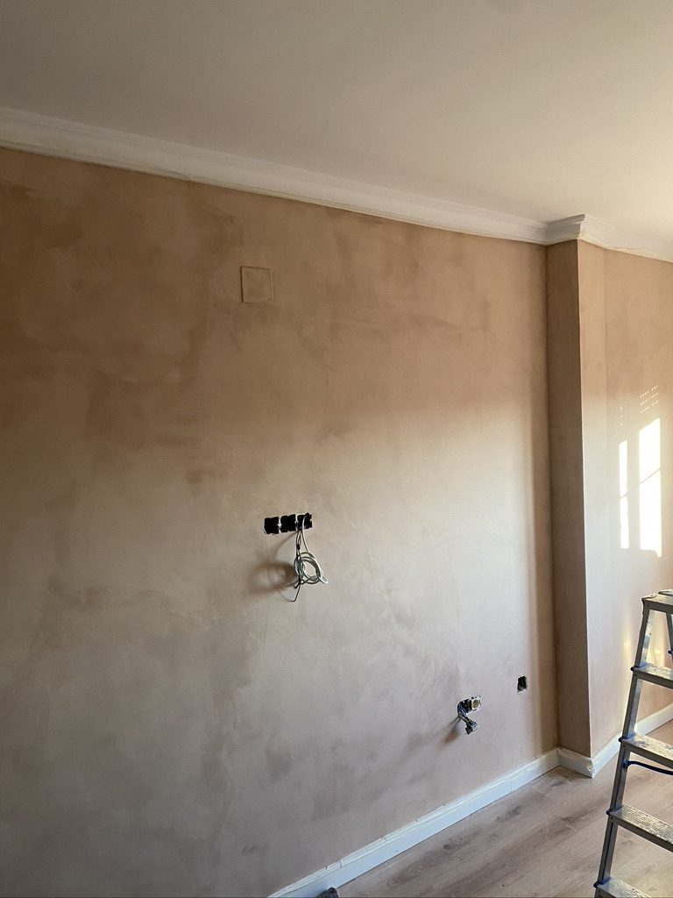
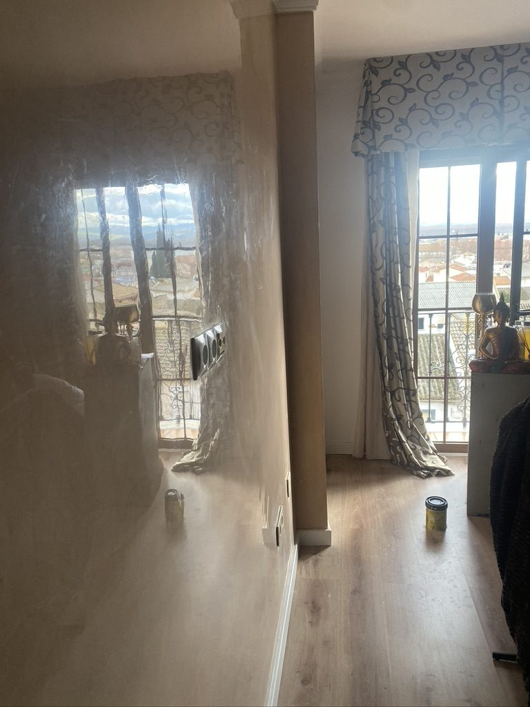
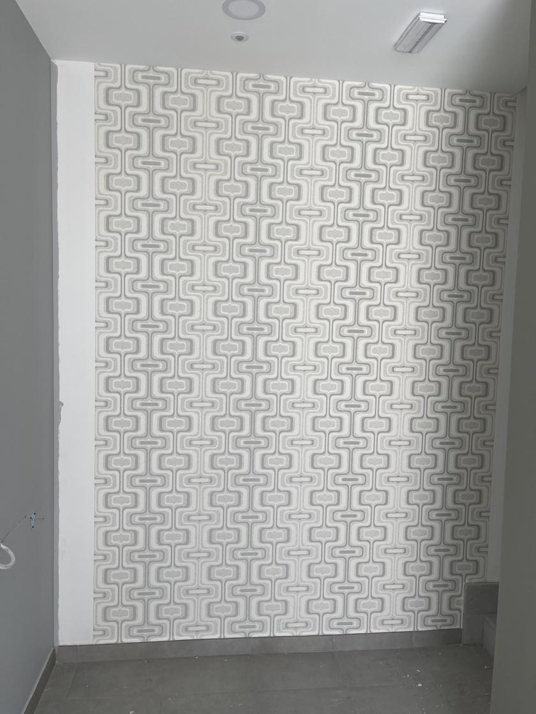
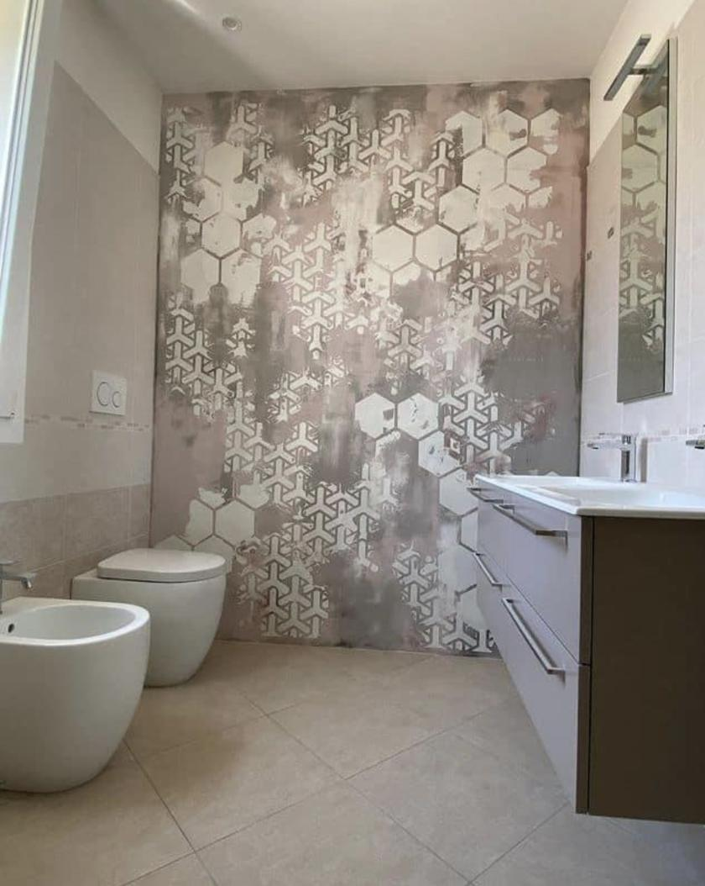
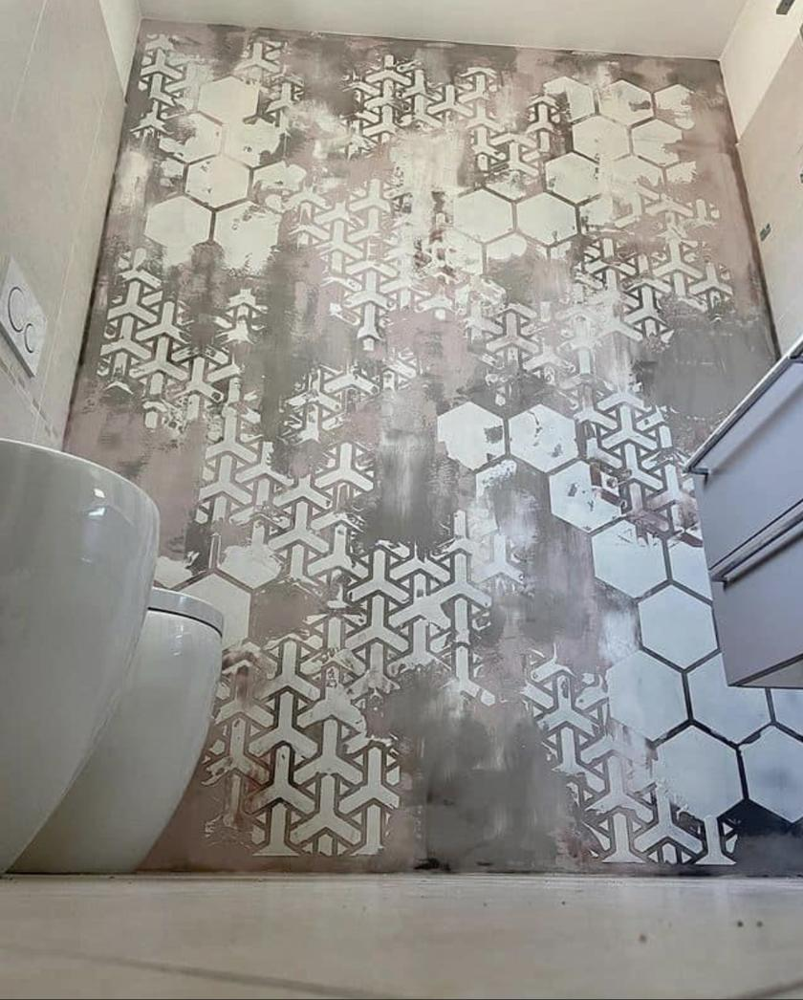
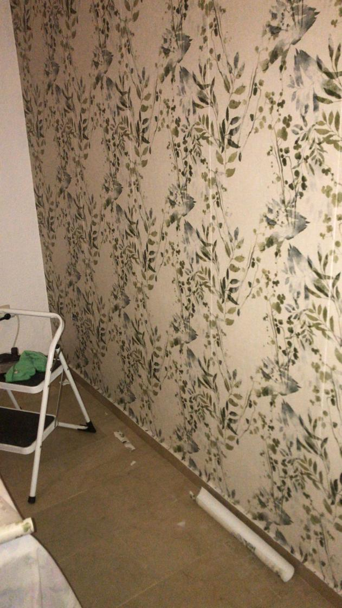
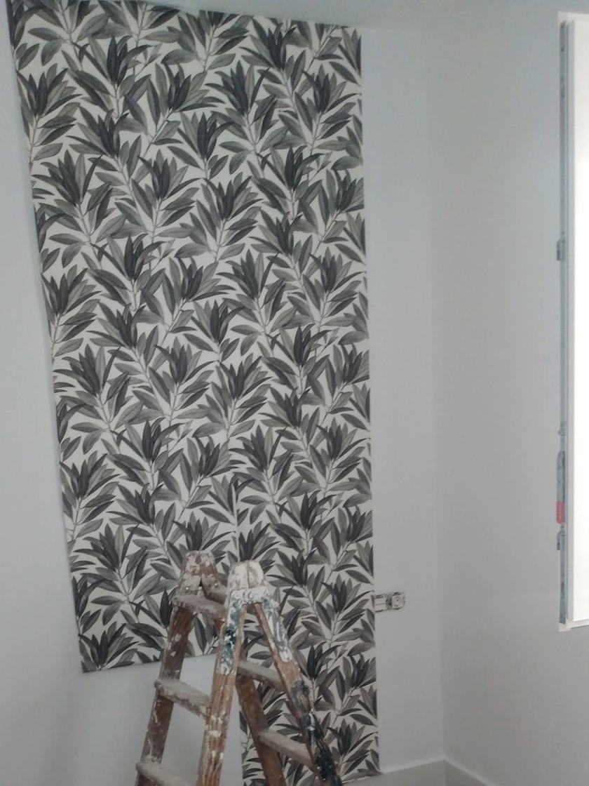
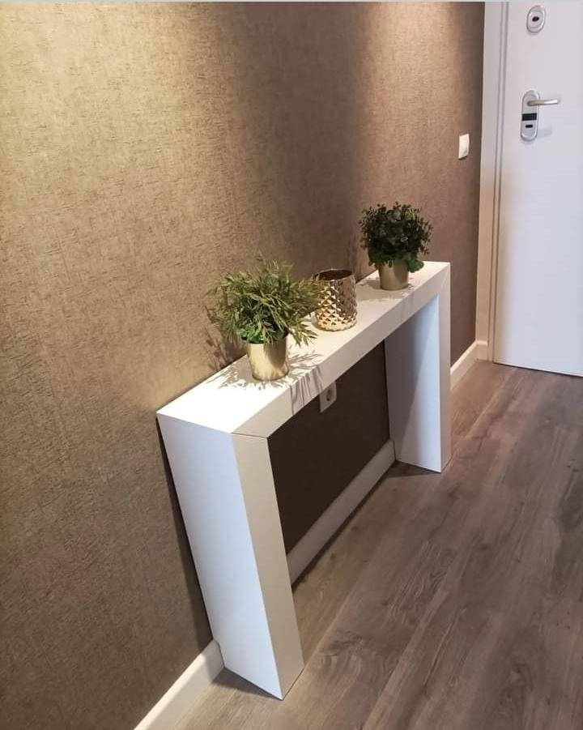
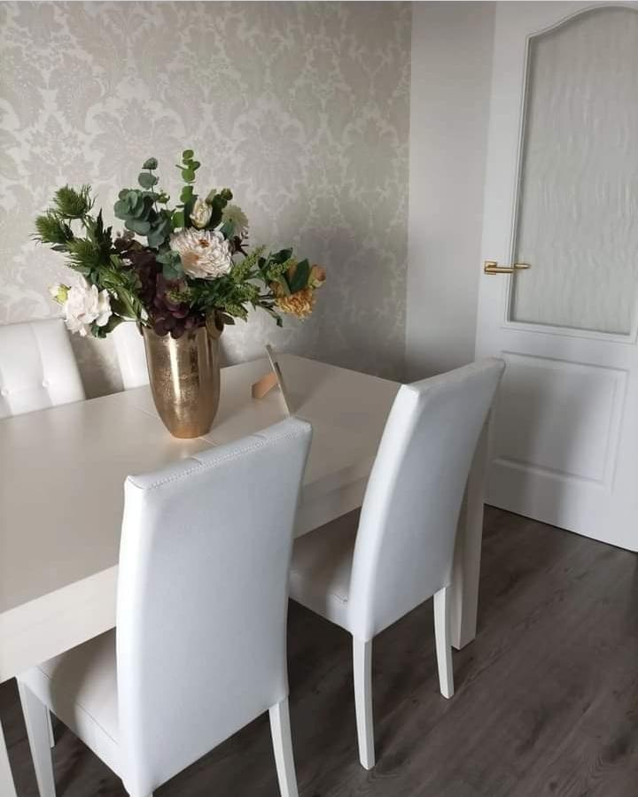
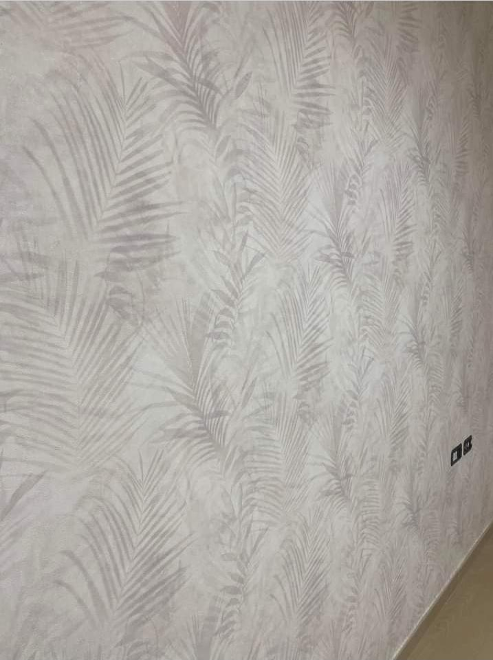

Pintura Decorativa en Granada —
Cuando Quieres Algo Diferente
Llevo desde 2012 aplicando estucos, efectos y acabados decorativos en Granada. Si estás cansado de paredes blancas lisas, esto es lo tuyo.
Algunos acabados decorativos que he hecho











¿Qué es la pintura decorativa?
La pintura decorativa va mucho más allá de dar una mano de pintura y que el color quede uniforme. Hablo de técnicas que crean textura, profundidad y carácter en las paredes. Cosas como el estuco veneciano, que imita el mármol con capas de cal y cera, o el microcemento, que da ese look industrial y continuo que ahora se ve tanto en las reformas de baños y cocinas.
No es magia, es oficio. Cada técnica tiene sus tiempos, sus materiales y su manera de aplicarse. Cuando se hace bien, una pared decorativa dura años y se mantiene perfecta. Cuando se hace deprisa o sin preparar bien la superficie, se nota en seguida: se agrieta, se descascarilla o simplemente no queda como se esperaba.
En Granada trabajo con familias que quieren darle un giro a su salón, con estudios de diseño que necesitan acabados concretos, y con propietarios de apartamentos turísticos que buscan algo distinto. Cada proyecto es diferente y lo tratamos como tal. Si tienes una referencia o una idea en mente, cuéntamela y te digo qué es lo más viable.
Qué puedo hacer en tu casa
Estas son las técnicas que más aplico en Granada. Si lo que buscas no aparece aquí, pregúntame igualmente.
Estuco Veneciano
El acabado más elegante. Imita el mármol y dura décadas si se cuida. Lo aplico a mano en varias capas y acaba con una cera que lo protege y le da ese brillo característico.
Microcemento
Moderno, continuo, sin juntas. Ideal para suelos y paredes de baños y cocinas. Se puede aplicar sobre casi cualquier superficie sin necesidad de demoler lo que hay.
Efectos Decorativos
Rayas, geométricos, envejecidos... lo que imagines, lo hablamos. Con la pintura y las herramientas correctas se pueden conseguir texturas muy distintas y originales.
Papel Pintado
Lo coloco yo, sin burbujas ni juntas visibles. También retiro el antiguo y dejo la pared lista. Un buen papel en la pared correcta cambia toda la percepción de una habitación.
Tarifas orientativas 2026
Estos son precios de referencia. El precio final depende del estado de la pared, la superficie total y la dificultad de acceso. El presupuesto es siempre gratis y sin compromiso.
| Técnica | Precio aprox. |
|---|---|
| Estuco veneciano | 18€/m² |
| Microcemento | Desde 85€/m² |
| Efecto mármol | 15€/m² |
| Efecto cemento | 12€/m² |
| Efecto madera | 14€/m² |
| Papel pintado (colocación) | 12€/m² |
| Pintura metalizada | 16€/m² |
¿Cuándo vale la pena hacer pintura decorativa?
No siempre hace falta. Pero hay situaciones en las que marca una diferencia real.
Cuando quieres que una habitación tenga personalidad propia y la pintura lisa se queda corta para lo que imaginas.
Cuando estás reformando un baño o cocina y quieres evitar el azulejo sin renunciar a un acabado limpio y resistente al agua.
Cuando tienes un espacio pequeño y quieres que parezca más grande o más alto con un efecto bien planteado.
Cuando eres propietario de un apartamento turístico y necesitas que las fotos destaquen en las plataformas de alquiler.
Lo que me preguntan siempre
¿Es más difícil de mantener que la pintura normal?
No si se aplica bien y se usa el producto correcto para cada superficie. El estuco veneciano con cera o el microcemento con sellador son muy resistentes al uso diario. La clave está en la preparación y en elegir el acabado adecuado para cada zona.
¿Cuánto tiempo tarda?
Una habitación de unos 15 m² lleva entre 2 y 4 días, según la técnica. El estuco veneciano necesita sus tiempos entre capas para que el resultado sea el correcto. No se puede hacer deprisa sin que se note.
¿Se puede hacer en toda la casa?
Sí, aunque lo más habitual es hacerlo en el salón, la entrada o el baño como zona de impacto. Hacer decorativa en toda la casa es perfectamente viable, aunque el presupuesto lógicamente sube. Muchos clientes empiezan por una habitación y después amplían.
¿Tienes una idea en mente? Cuéntamela
Si tienes una referencia, una foto o simplemente una idea en la cabeza, llámame o escríbeme por WhatsApp y lo vemos juntos. No cobro nada por el presupuesto ni por la visita.
Servicios relacionados: Pintura Granada · Falsos Techos LED · Reformas Baños · Placas de Yeso Cocinas · Pintura Antihumedad · Colores de Moda 2026
¿Y cuánto me costaría a mí?
Calcula el precio de pintar o reformar tu casa en 2 minutos — sin compromiso y sin que nadie te llame.
Calcular precio gratis →